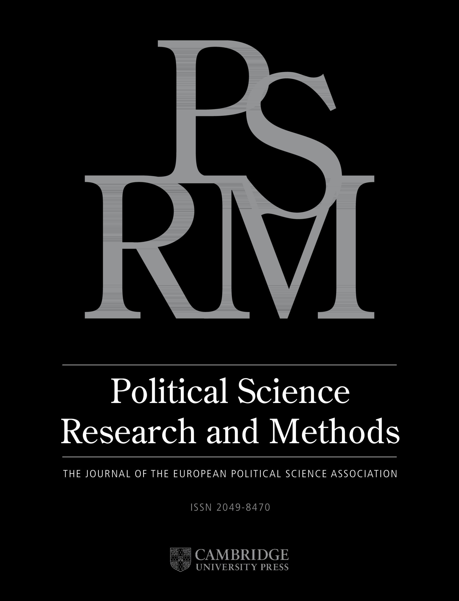
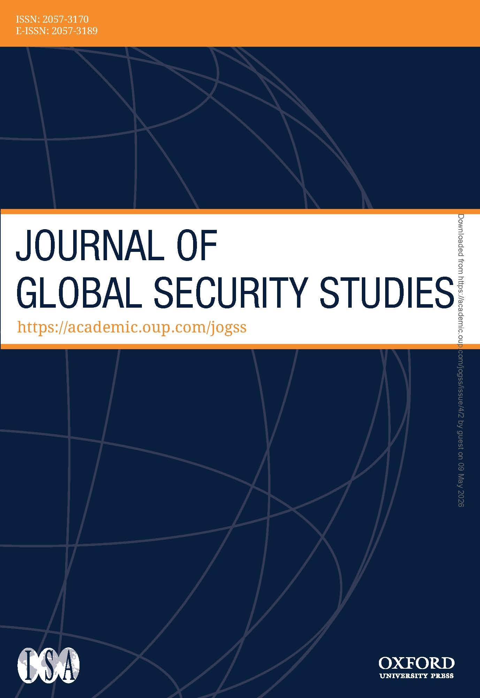
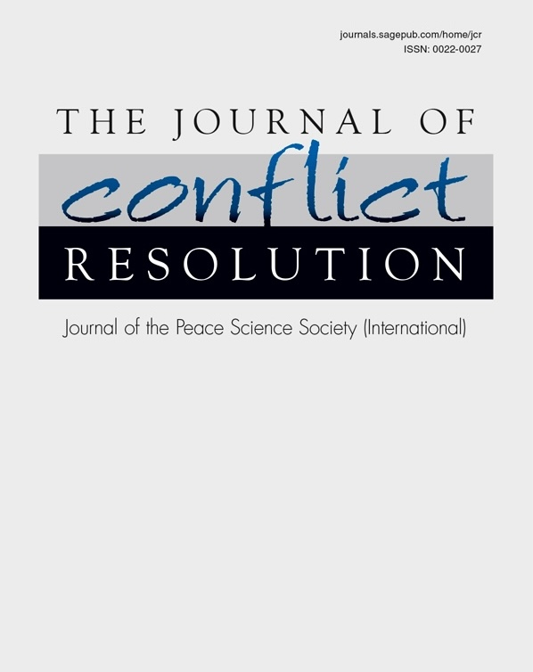
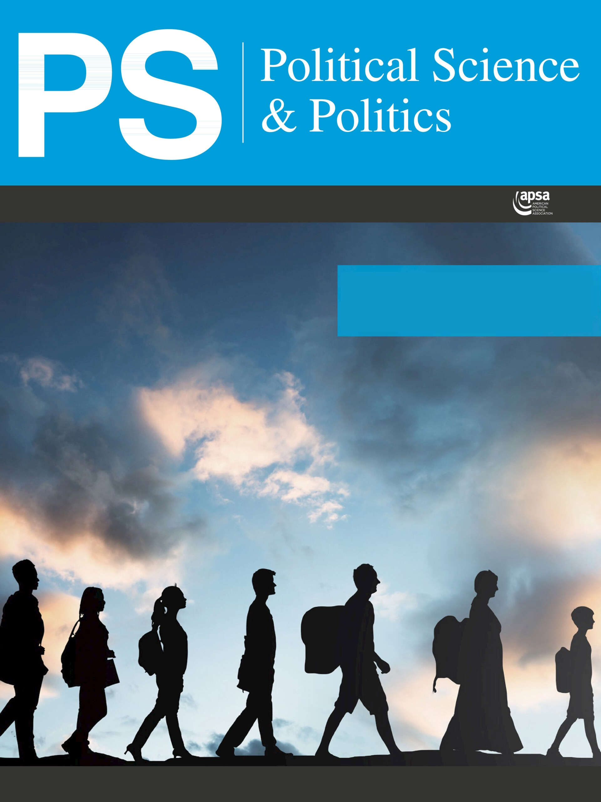
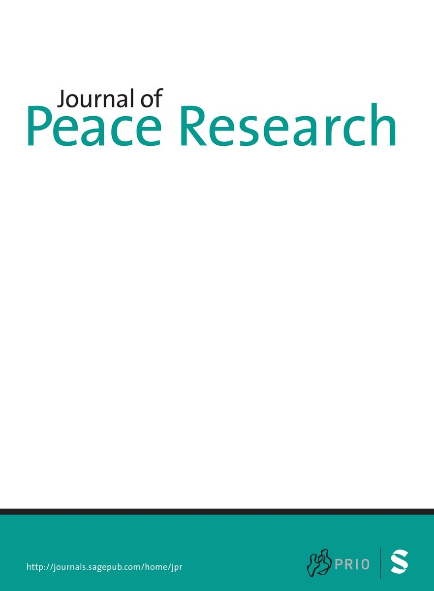
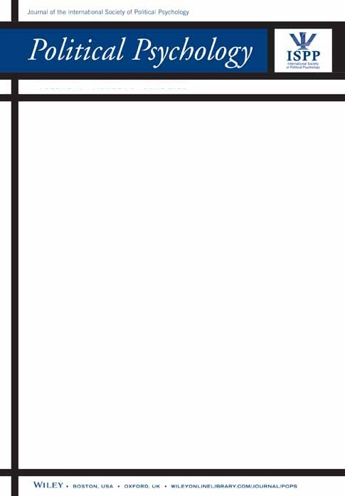
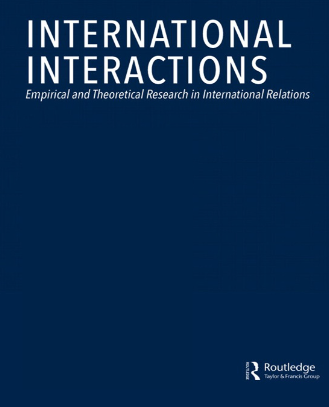
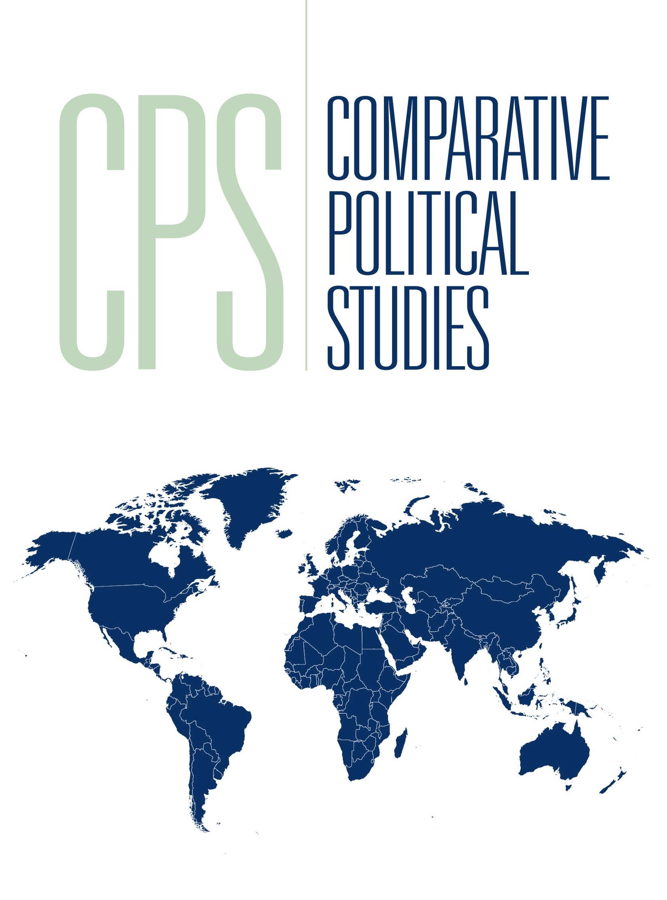
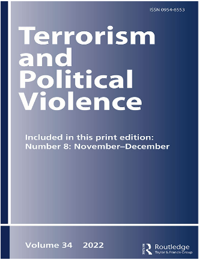

My published work advances conflict studies by reframing core conflict processes around organizational mediation between violence and society. My research centers on the meso-level organizational mechanisms that link rebel governance, communication, recruitment, civilian victimization, and alliance politics. I develop socio-organizational theories of rebellion that explain how insurgent groups identify, categorize, and manage civilian populations, coordinate with other armed actors, and communicate both violence and restraint to domestic and international audiences.

Onder, Ilayda B. 2026. “A Principal-Agent Theory and Network Analysis of High-End Cooperation Among Militant Groups.” Political Science Research and Methods. Accepted Pending Replication.
This study develops a principal–agent theory of why and how armed groups engage in high-end cooperation involving training, intelligence, and logistical support. While such cooperation enhances operational capacity, it also redistributes power and generates downstream political risks. Principals mitigate these risks by selecting agents who are skill-wise complementary but politically non-substitutable, while agents accept high-end support when doing so does not risk becoming politically overshadowed by a dominant actor. Using original temporal network data on 53 groups in Northeast India (1981–2021) and Temporal Exponential Random Graph Models (TERGMs), I show that high-end cooperation is more likely in asymmetric dyads characterized by organizational capacity differentials, complementary attack portfolios, and distinct civilian constituencies. The findings recast militant alliances as products of competitive threat perception and carry broader implications for multiparty conflicts and the delegation of violence in civil wars.
Pre-Print
Berlin, Mark, Ilayda B. Onder, and Joshua Fawcett Weiner. 2026. “Leadership Succession and Jihadist Beheadings.” Journal of Global Security Studies. Forthcoming.
Why do armed groups use extreme forms of violence? Existing research argues that ideological beliefs and attempts to intimidate civilians, provoke enemies, and generate publicity drive armed groups' use of extreme violence. Building on existing scholarship, this study explores the incentives of different types of militant leaders to sanction extreme violence. Leadership transitions create authority crises within armed groups. We argue that these pressures incentivize successor leaders to employ extreme violence like beheadings as a tool of internal consolidation and external signaling. To examine these arguments, we combine an original dataset of the biographical attributes of 206 leaders of 108 different jihadist groups with event-level data on jihadist beheading attacks. In doing so, we find that jihadist organizations are significantly more likely to use beheadings under successor leaders. This effect is pronounced among successors who come to power following the arrest or death of their predecessors at the hands of state forces. However, the use of beheadings under successors decreases as their time in power increases, indicating the diminishing returns of using extreme violence over time. These findings contribute to scholarship on militant leaders, the consequences of counterterrorism policies, and the strategic logic of extreme violence.
Pre-Print
Berlin, Mark, and Ilayda B. Onder. 2026. “Beyond Outbidding: Armed Group Responses to Transnational Jihadist Competition.” Journal of Conflict Resolution. Forthcoming.
Numerous jihadist organizations pledged allegiance to al-Qaeda (AQ) or the Islamic State (IS) in recent years. How do armed groups respond to competition from transnational jihadist rivals? A prominent strand of research argues that increased competition leads armed groups to outbid rivals through increased violence. However, alternative theories suggest that groups can restrain their violence to distinguish themselves from extremist rivals and appeal to local and international audiences. We test these competing hypotheses surrounding outbidding and restraint using original data on pledges to AQ and IS and a Difference-in-Differences (DiD) analysis of militant violence against civilians. We find that pledges to AQ or IS are associated with a moderate decline in the violence of other armed groups against civilians. Importantly, these findings are primarily driven by non-religious organizations and groups that are not formally designated as terrorists. This study contributes to research on militant competition, civilian victimization, and transnational actors.
Pre-Print
Onder, Ilayda B. 2026. “Quantitative Premises and Challenges in Studying the Kurdish Conflict in Turkey.” PS: Political Science & Politics. Forthcoming.
This article examines the conditions that make the Kurdish conflict in Turkey, particularly the PKK insurgency, unusually amenable to large-N quantitative analysis, and discusses the inferential limits those same conditions impose. The PKK's sustained archival production over multiple decades has generated an exceptional volume of publicly accessible written and digital materials that enable disaggregated measurement at the individual, district, and monthly level, a form of granularity rarely achievable in conflict research. Such data enable direct measurement of outcomes often treated as latent, including rebel recruitment, and support research designs that can approximate causal identification at fine temporal and spatial scales. At the same time, PKK materials are instruments of information warfare that embed biases, including omission and severity biases whereby controversial practices are underreported and their most sensitive dimensions concealed, as well as the invisibility of civilian agency in rebel-produced records. After discussing potential empirical strategies for assessing and validating rebel-produced data, I conclude by positioning survey research as a partial corrective that can recover civilian agency in several areas of inquiry, especially civilian interactions with rebel governance attempts, while underscoring the financial and ethical constraints that limit the precision, scalability, and reproducibility of survey research in this setting.
Pre-Print
Amjad, Maria, Mark Berlin, Sara Daub, Ilayda B. Onder, and Joshua Fawcett Weiner. 2026. “Commanders of the Mujahideen: Introducing the Jihadist Leaders Dataset.” Journal of Peace Research 63(2): 289–297.
Recent research has explored how militant leaders' backgrounds shape their decision-making while in power. However, existing studies primarily focus on leaders of rebel groups participating in civil wars, overlooking smaller, yet lethal and influential, armed groups that operate outside civil war contexts. To address this gap, we introduce the Jihadist Leaders Dataset (JLD), which provides original, systematic data on the backgrounds and prewar experiences of 237 leaders from 110 jihadist organizations. The dataset covers organizations operating across Africa, Asia, and the Middle East between 1976 and 2023, capturing a broad range of actors that are central to contemporary conflicts. Drawing on Arabic, English, French, German, Turkish, and Urdu sources, we document biographical information on 31 leader-level variables, offering the potential for analyzing how jihadist leaders' prior experiences shape their preferences and the behavior of the groups they command. We detail our data collection procedures and present descriptive statistics before illustrating the JLD's utility through a quantitative analysis of the leader-level determinants of suicide bombings. The JLD advances research on militant leaders, jihadist actors, and the role of individual decision-makers in shaping conflict processes and provides multiple avenues for new research on leader-level explanations of various consequential outcomes in conflict zones, including organizational splintering, tactical choices, and militant alliances.
Article | Pre-Print | Replication Data
Onder, Ilayda B., and Mark Berlin. 2025. “We Have Nothing to Do with It: How Statements of Denial by Armed Actors Shape Public Perceptions and Emotions.” Political Psychology.
Armed groups operating in conflicts around the world publish statements of denial to dissociate themselves from acts of violence. Existing research argues that armed groups publish denial statements to avoid public backlash, favorably frame the conduct of their campaigns, and distance themselves from unsanctioned actions conducted by rank-and-file members. However, the broader psychological impact of denial statements on public perceptions remains unexplored. Investigating the effects of denial statements published by armed groups, we conducted a novel survey experiment with a national sample of 1616 adults in the United States. Participants were presented with a fictional attack attributed to an armed group by the government and randomly assigned to conditions in which the group denied, claimed, or remained silent about the attack. Our findings reveal that denials reduce perceived culpability in attacks, undermine trust in government, and alter emotional responses to violence. These results highlight how denial statements may serve as important rhetorical tools in armed groups' discursive repertoire. This study contributes to scholarship on the communication strategies of armed groups, psychological responses to violence, and the effects of militant discourse on public perceptions.
Article | Pre-Print
Onder, Ilayda B., Nazli Avdan, and Aaron M. Hoffman. 2025. “Credit Claims and the Survival Rates of Terrorist Organizations.” International Interactions 51(6): 1050–1066.
This study investigates the relationship between terrorist credit claims and government counterterrorism efforts, focusing on the impact of claims on group survival. Using data from the Extended Data on Terrorist Groups (EDTG) and Global Terrorism Database (GTD), we find that groups issuing credit claims have shorter lifespans than groups that remain silent. We are unable, however, to connect this increased mortality to government counterterrorism efforts even though government action is supposed to deter groups from issuing credit claims. Instead, we find that credit claiming groups are more likely to merge with other terrorist organizations, splinter apart, or fade away through inactivity. These findings raise questions about how the prospect of government counterterrorism efforts influences terrorist activity. The idea that the threat of government retaliation dissuades groups from issuing credit claims may require a reassessment.
Article | Pre-PrintOnder, Ilayda B. 2025. “How Civilian Loyalties Shape Rebel-led Victimization of Rebel Constituencies.” Journal of Conflict Resolution 69(4): 701–730.
Rebels rely on the support of their civilian constituency, but often victimize them to enforce compliance. Scholars know relatively little about how rebels strategize violence against civilians in conflicts where the rebel constituency overlaps with the government's political support base. This gap is problematic because the rebel constituency comprises a diverse group with varying attitudinal and behavioral characteristics. Offering a novel typology of rebel constituency members—loyals, disloyals, fence-sitters, and free-riders—this study examines the impact of rebel constituency support for the government on the rebels' targeting of their civilian constituency. Leveraging an original dataset of the PKK's coercive acts targeting civilians in Kurdish-majority provinces of Turkey between 2014 and 2019, I proxy rebel constituency support for the government with district-level data on incumbent party victory in the 2014 municipal elections and employ a regression-discontinuity approach. I find that the spatial distribution of loyal and disloyal rebel constituency members is crucial in explaining subnational variations in civilian victimization, specifically who is targeted and where. This study enhances our understanding of rebels' use of coercion to alter their constituencies' political allegiances and calls for greater attention to individual or community-level characteristics of civilians, beyond ethnic or identity-cleavages, in rebel-civilian interactions.
Article | Pre-Print | Replication Data
Loyle, Cyanne E., and Ilayda B. Onder. 2024. “The Legacies of Rebel Rule in Southeast Turkey.” Comparative Political Studies 57(11): 1771–1803.
During armed conflict civilians often inhabit areas of contested governance or areas where rebel groups, NGOs, and/or criminal syndicates vie for authority and challenge the control of the state. As non-state actors confront the authority and legitimacy of the state, civilians become central players in that competition asked to uphold or undercut these alternative governance claims. In this paper we examine the long-term impact of rebel governance for citizens living in spaces where state governance is challenged. Leveraging survey data from areas historically under PKK control in Southeastern Turkey, we focus on the ways in which contestation over governance during the conflict influenced future trust and engagement with the Turkish state. Specifically, we find that individual engagement with rebel governance institutions and personal conflict experience are important factors in understanding the effects of contested governance. Our findings increase our understanding of the long-term impact of armed conflict on civilians and the potential lasting impacts of rebel governance on the post-conflict state.
Article
Onder, Ilayda B. 2024. “Target Hardening and Non-State Armed Groups' Target Selection: Evidence from India.” Terrorism and Political Violence 36(8): 1105–1126.
This study explores the variation in the non-state armed group (NSAGs)'s behavior concerning target selection. Scholars of transnational terrorism have investigated transnational NSAGs' target selection. However, we are still missing out on the most common form of terrorism, terrorism perpetrated by domestic NSAGs involved in civil conflicts. This paper's novel contribution is to the understanding of domestic NSAGs' strategic logic. I argue that hardening makes soft targets, including civilians, attractive targets when hard targets are no longer attractive. NSAGs tactically adapt to hardening by switching to soft targets or by displacing attacks to adjacent locations within their home country. The empirical results from data on relevant state-group dyads in India between 2004–2016 show that domestic NSAGs (1) switch to soft targets when faced with hardening, (2) less frequently target soft targets when more of their attacks against hard targets have been logistically successful, and (3) commit more attacks in their primary area of operation when more of their attacks in that location have been logistically successful. These findings emphasize a variety of ways through which domestic NSAGs adapt their tactics and underscore potential costs for target hardening.
Article | Pre-Print | Replication DataOnder, Ilayda B. 2023. “Signaling Resolve through Credit-claiming.” International Interactions 49(5): 755–784.
What explains when militant groups claim attacks? In this study, I argue that militant groups are more likely to claim attacks early in the organization's lifespan and after major blows to reputation like loss of a leader due to leadership decapitation. This is because credit-claiming helps militants signal resolve to a wider audience, thereby burnishing the organization's reputation. Specifically, I argue that claims of militant attacks are costly for organizations because they may be met with government retaliation. However, groups that are younger or have recently suffered the loss of a leader seek to use government retaliation to signal resolve. I find support for this proposition using two sets of empirical analyses. First, I show that claims increase the risk of government retaliation. Then, using a comprehensive data set of 592 groups, I show that militant groups are more likely to claim attacks in the earliest phases of their lifespans and after their leaders are killed/captured. Although civilian victimization and emerging due to splintering are found to be depressing credit claiming, the findings also suggest that (i) groups that only target security forces, (ii) groups that victimize civilians, (iii) groups that emerged independently without known affiliations with existing groups, and (iv) splinter groups all issue fewer claims as they age. These findings help elucidate a largely overlooked dimension of strategic militant behavior.
Article | Pre-Print | Replication Data